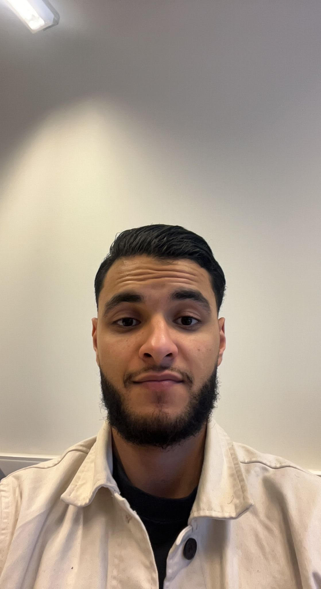

← Terug naar Dashboard
KOMPANION Video Gesprek

Annie van Dijk
72 jaar, Rotterdam
Microfoon uit
Willekeurig gesprek gestart!
🎤
📹
📞
➕
Nieuwe Gesprekspartner
(willekeurig)
Even geduld...
We zoeken een nieuwe gesprekspartner voor u